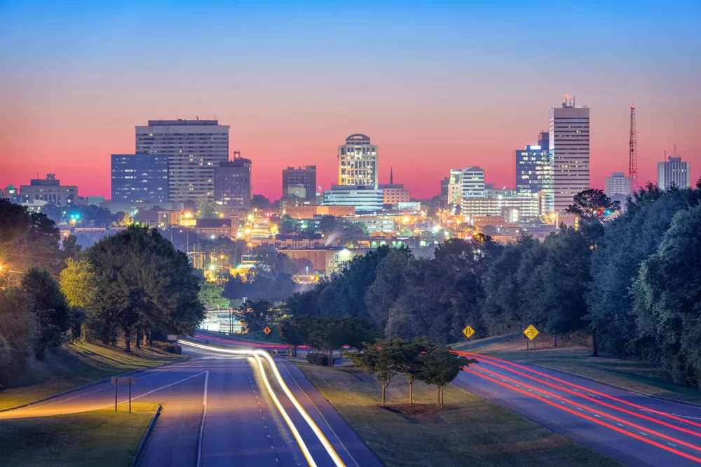

South Carolina
Home
Columbia
Charleston
Myrtle Beach
Contact Us
Columbia

The city's population: 136,632
The year the city was incorporated: 1805
The region of the state in which the city is located: Midlands
The classification of the city: Urban
The average income level of the city compared to the rest of the state: Lower
South Carolina average household income:
$50,570
Columbia, SC average household income:
$31,141